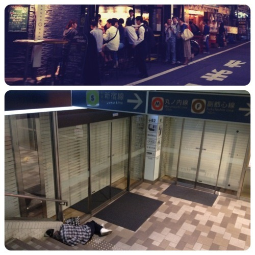
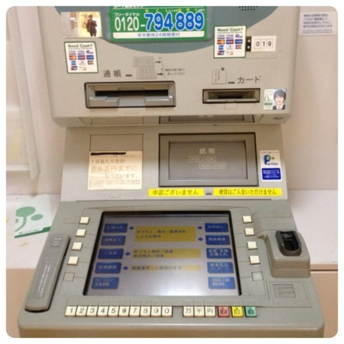

The upcoming series of my Tokyo journal would be really challenging. Not only that I would arrive armed with preconceived notion of what Japan was like after living in Tokyo for two years, but also to see how Japan stack up against China.
I thought I arrived in in the future but why do ATM look like this? To say that this is a bad User Experience was an understatement. I still don’t get where the disconnect is. What about all the minimalist Zen-like approach? Why do a lot of Japanese websites (or apps) have horrible User Interface? Why do Tokyo metro still hasn’t improve its user experience in transferring between lines?

This was my first return to Tokyo in which I am no longer a Vegan, which means I could finally sample all those sushi and sashimi. Still, being a non meat-eater is very challenging in Japan especially when the cuisine is less diverse compared to Chinese in terms of vegetables or let’s say, warm food that doesn’t wriggle its body parts nor requiring public beheading.
Getting from Narita to Akasaka was quite uneventful, the limousine bus was definitely the better choice than getting on the Shinkasen. Taking Taxi, however, was another story, especially if your driver is an elderly Japanese woman who hardly speaks any English. This was when I realized that my Japanese has become practically non-existent. Broken-Japanese aside, I managed to get to where I need to be relatively unscathed.
Stay tuned…